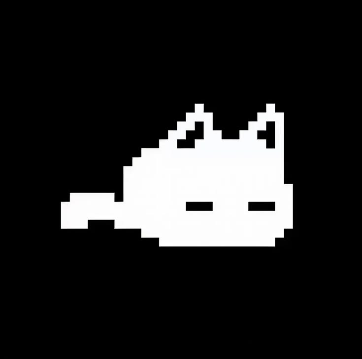
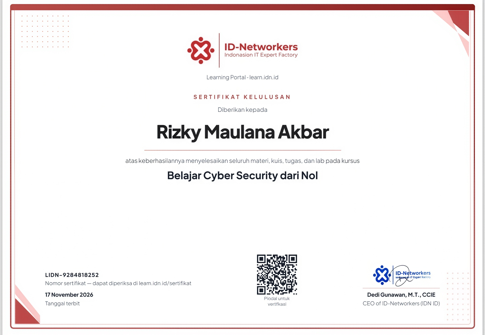

Rizky Maulana Akbar
Pelajar Keamanan Siber
Belajar menemukan celah sebelum orang lain memanfaatkannya.
Contact
RzkyPelajar Keamanan Siber
Belajar menemukan celah sebelum orang lain memanfaatkannya.
Contactrizky@kali:~$whoami
Rizky Maulana Akbar, siswa Kelas 10 TKJ, SMK Negeri 1 Kota Mojokerto.
rizky@kali:~$cat about.txt
Halo! Saya punya minat besar di infrastruktur IT, administrasi sistem Linux, dan keamanan siber.
Berpengalaman merancang dan mengelola environment Linux (Arch & Kali) untuk analisis jaringan, reverse engineering, dan penetration testing. Aktif mengeksplorasi tantangan keamanan teknis dan CTF.
rizky@kali:~$ls skills/
keamanan-jaringan pengujian-web linux ctf
rizky@kali:~$
Belajar dasar-dasar jaringan, fundamental IP, Cisco Packet Tracer dasar, dan MikroTik dasar.
Mengikuti IONIC dan mengerjakan soal kategori Reverse Engineering dan Cryptography bersama tim.
Fokus mempelajari cyber security untuk kompetisi CTF berikutnya.

GhidraReverse engineering
NmapPemindaian jaringan
AutopsyForensik digital
Kali LinuxSistem operasi pentestDaftar sertifikat dan penghargaan yang saya peroleh. Setiap sertifikat bisa diverifikasi lewat tautan kredensial dari penerbitnya.

ID Network
Untuk kolaborasi atau pertanyaan, hubungi lewat salah satu jalur di bawah.